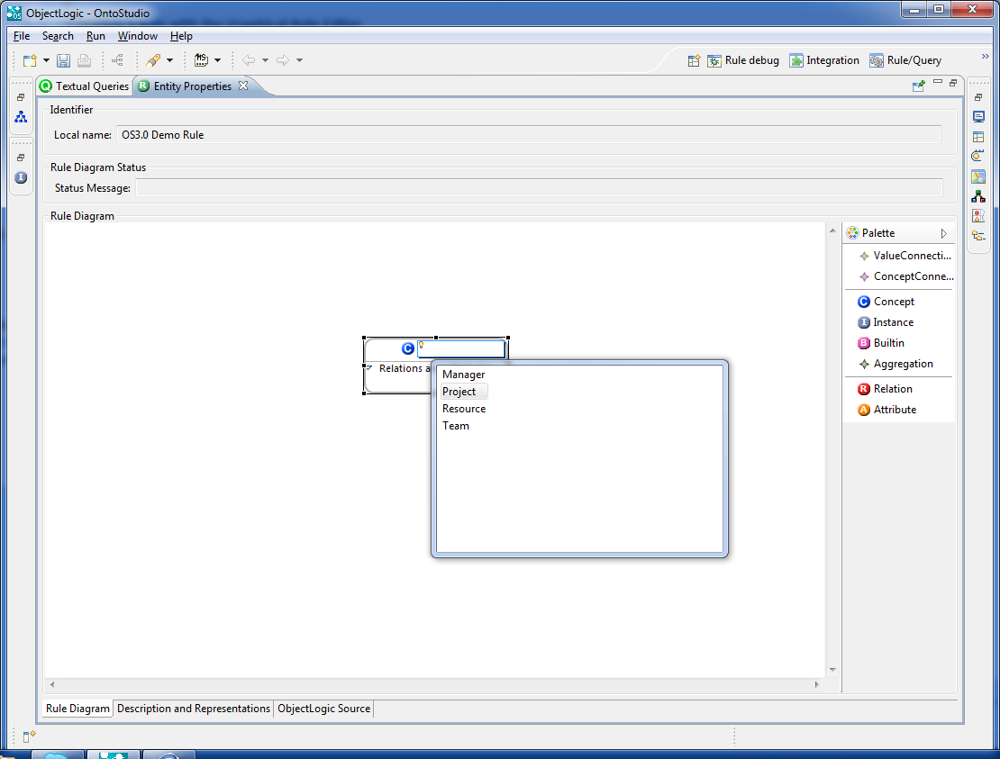
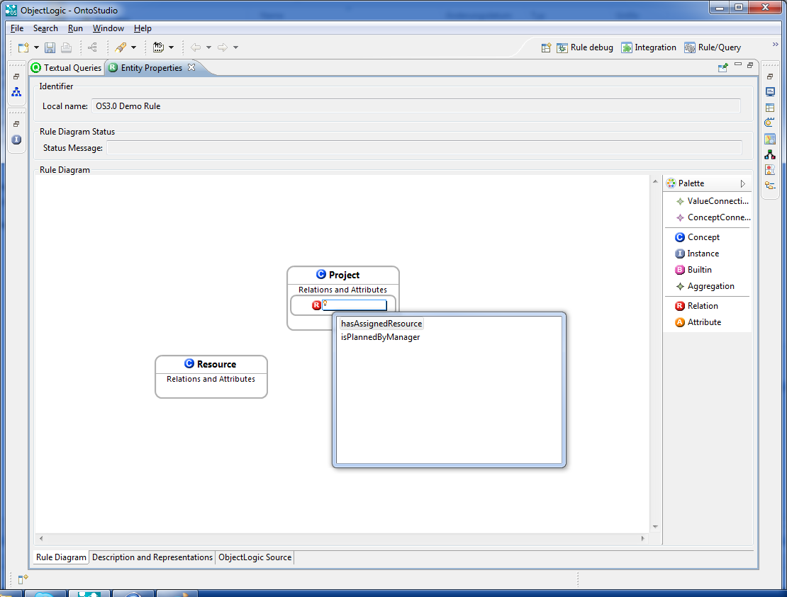
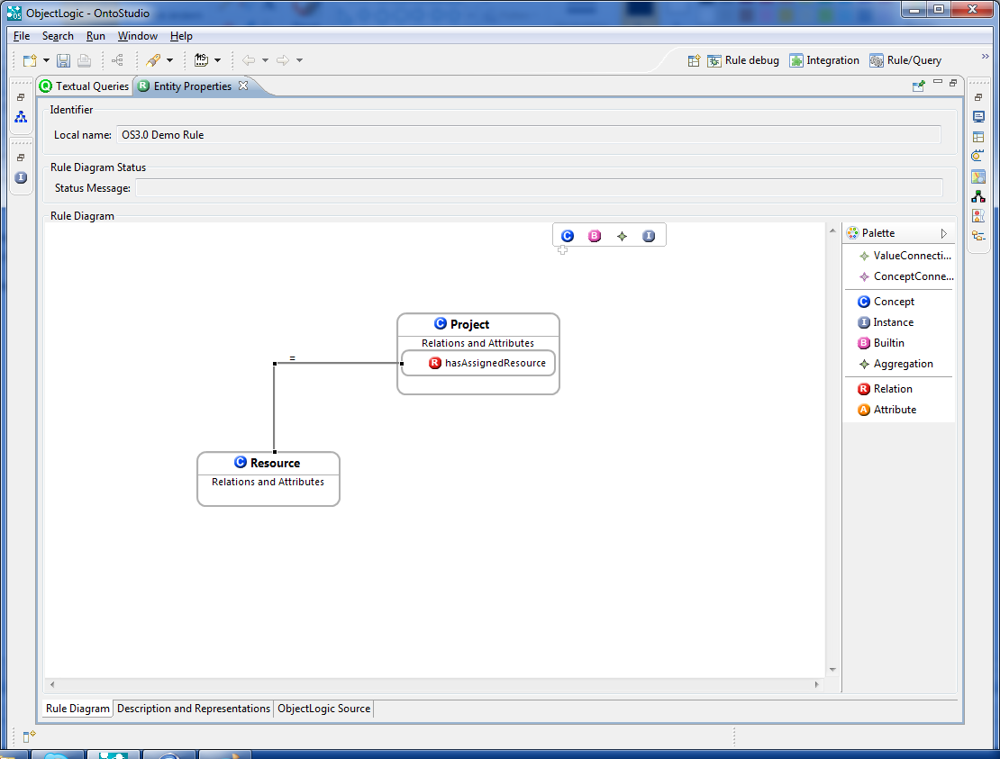
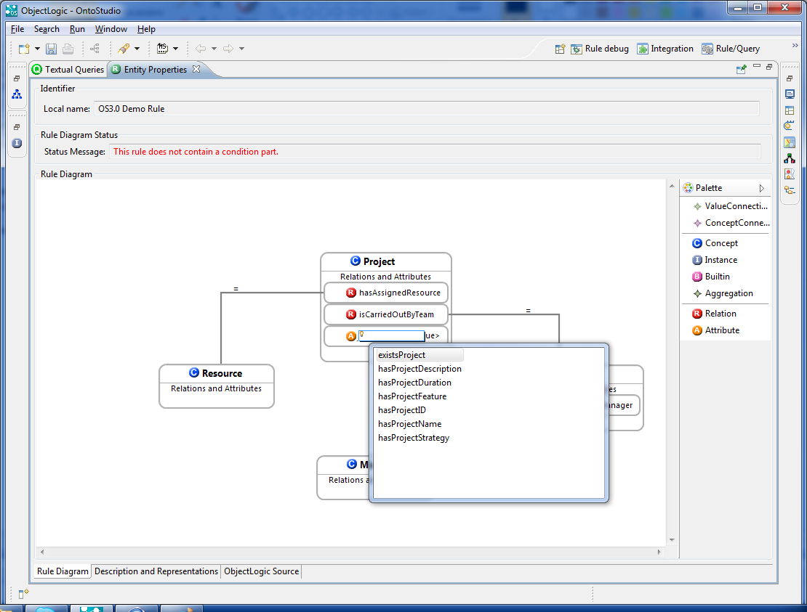
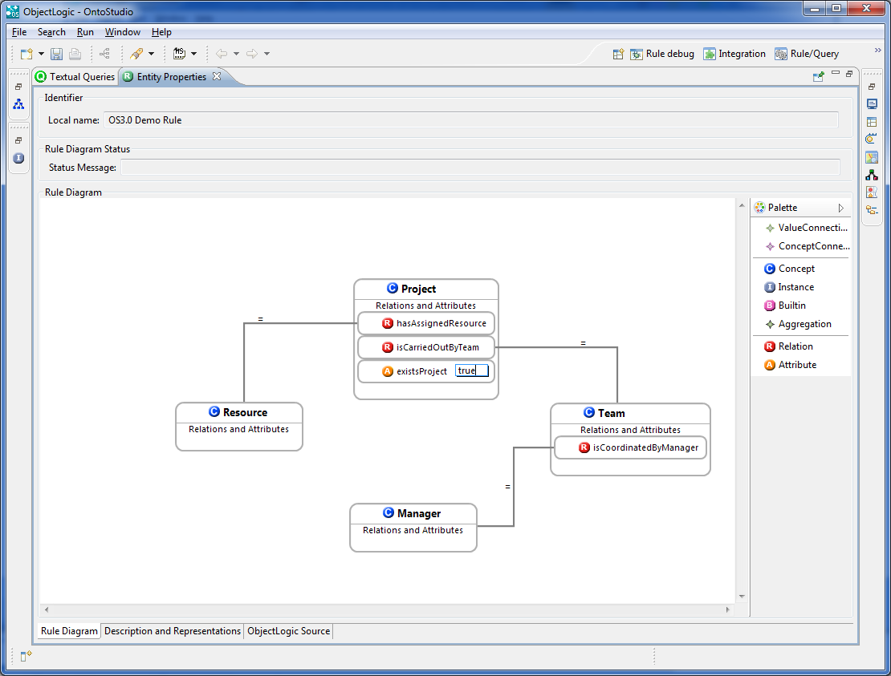
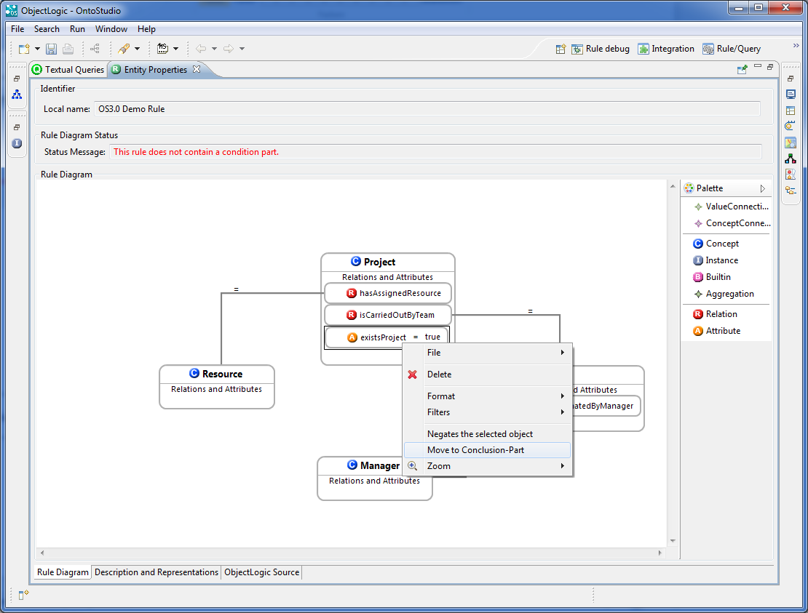
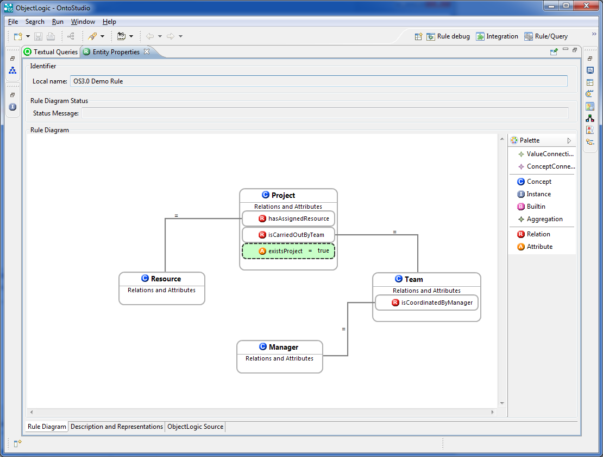
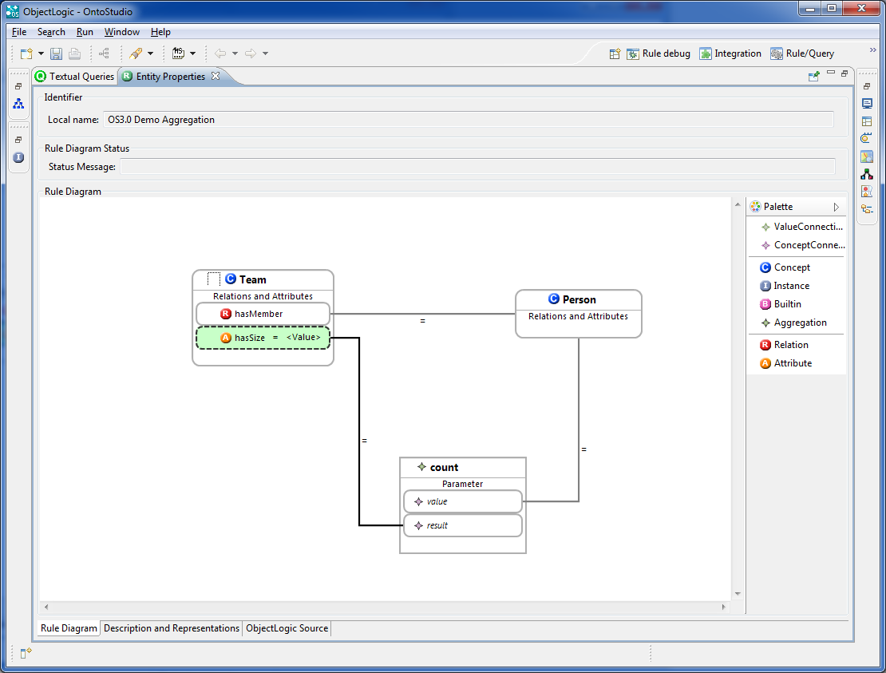
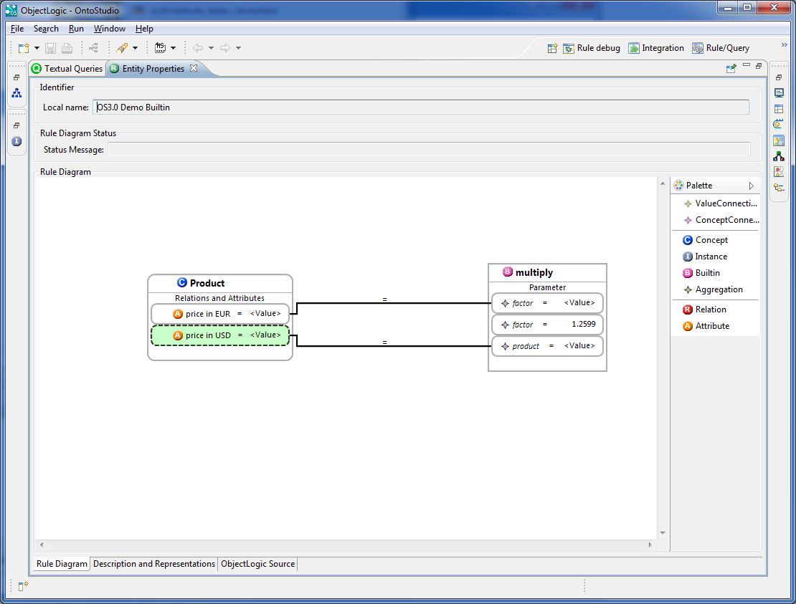

|

|
|
Creating Rules graphically |
|
|
|
|
Creating Rules graphically |
There is a Project (existsProject) that has some assigned resource (hasAssignedResource) and is carried out by a team (isCarriedOutByTeam). The team is coordinated by a manager (isCoordinatedByManager). The attribute existsProject has a boolean value (Value) ascribed. In such a case the rule concludes that the project exists (the attribute existsProject equals true).
| 1. | Create a class in the Graphical Rule Editor. |
There are four possible ways:
| • | Drag & drop |
| • | From palette |
| • | Using the context menü |
| • | Hover effect (toolbar) |

| 2. | Add a Relation. |
There are three possible ways of adding a relation.
| • | Using a right click mouse |
| • | By clicking on a name |
| • | By choosing the relation name from the auto complete list |
Proceed as follows:
| a. | Add relation node to class (from palette). |
| b. | Choose a relation name. |
| c. | Connect relation to another class. |

| d. | Create Connections Between Classes. |
There are two ways of creating a connection between them.
| • | Using the Palette menu. Click on ClassConection in the Palette menu, then drag and drop from the Class Relation to another Class to set connections between them. |
| • | Using the Tooltip menu. Move the cursor across the Relation to activate the tooltip menu. A left or right arrow will be displayed. Drag one of the arrows to the class (by keeping the mouse button pressed) and drop it there. |

All relations that contain a class can be listed with CTRL+SPACE.
| 3. | Adding a property (here: attribute). Same here as for relations. |
Choose a property (here: attribute from the attributes list) (CTRL + SPACE).

| 4. | Add value to the selected attribute. |
| a. | Click on the value field of the attribute and enter a value (depends on the data type of the attribute). |
| b. | Additionally, you can also choose a comparison operator (for example, age < 30). |

| 5. | Tagging an element as a conclusion of the rule. |
If this configuration will occur, a "true" value will be assigned. Make a right mouse click on the existsProject attribute and select Move to.

The Final Rule

Aggregations Sample
For more information, see the OntoBroker Enterprise Manual (chapter "Aggregations").

Built-ins Example
For more information see the OntoBroker Enterprise Manual (chapter Appendix -> Built-ins).
